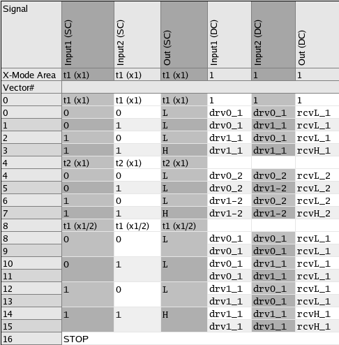

Representing a pattern in device orientation
If no timing set change is executed within a label (pattern), the tester cycle length remains the same throughout the label. But even then it is possible to accelerate or slow down the test execution from the standpoint of the DUT. Acceleration is realized with tester waveforms that comprise the actions of several DUT waveforms (x-mode), a slowdown with tester waveforms that contain only a part of the actions belonging to one DUT waveform and which must be combined in a certain order to produce one slow DUT waveform (fractional x-mode). Both acceleration and slowdown can be realized within the same label. It is also possible to use different (integer or fractional) x-modes for different pins.
The following wavetable defines waveforms for x-modes 1, 2 and 1/2:
WAVETBL MyTbl PINS Input1 Input2 Out 0 "d1:F00" drv0_1 1 "d1:F10" drv1_1 2 "d3:F00" drv0_2 3 "d3:F10" drv1_2 4 "d1:F00 d2:F00" dc00 5 "d1:F10 d2:F00" dc01 6 "d1:F00 d2:F10" dc10 7 "d1:F10 d2:F10" dc11 8 "r1:E0" rcvL_1 9 "r1:E1" rcvH_1 a "r3:E0" rcvL_2 b "r3:E1" rcvH_2 c "r1:E0 r2:E0" rcLL d "r1:E0 r2:E1" rcLH e "r1:E1 r2:E0" rcHL f "r1:E1 r2:E1" rcHH
The waveforms for the fractional x-mode 1/2 are realized by combining two of the waveforms 0 through 3, or two of the waveforms 9 through b.
Since a slow DUT waveform is realized by x tester waveforms, and a fast one by putting x DUT waveforms into one tester waveform, the DUT waveforms, vectors, and cycles are called X-waveforms, X-vectors, and X-cycles, respectively.
Displaying vectors in device oriented view
The Pattern Debug tool can present the pattern in several views. In the device cycle view (which is the default), it shows the pattern mainly from the tester standpoint. Every row of the vector table represents one tester vector. Accelerated execution as described above can be indicated by the device cycle names, but it is not possible to show how one slow X-vector is built up from several tester vectors.
However, the Pattern Debug tool can display and let you edit patterns for standard pins in a DUT oriented view. In this view, the tester oriented table is overlaid by the X-vector structure. If a tester vector for a certain pin contains several X-vectors (accelerated execution), these X-vectors are represented by separate sub-rows within the respective tester vector row. If conversely one X-vector for a certain pin comprises several tester vectors (reduced speed), then these tester vectors are combined into a single super-row. The required information is defined in a STATEMAP section within the base wavetable.
Waveforms for PS3600 fast pins can also be presented in the DUT oriented view. But it is not necessary to define a STATEMAP section for them. Since the x-mode for fast pin waveforms can be inferred from the number of actions in the waveform definition, the Pattern Debug tool needs no further information to display them as X-vectors.
The STATEMAP section
Every X-vector is associated in the STATEMAP section with one single state character. Accordingly, several state characters are associated with one tester vector when the DUT runs faster than the tester (one state character for every sub-row), and one state character is associated with several tester vectors if the DUT runs slower than the tester (only one state character for one super-row). This allows you to represent X-waveforms which perform the same logical action, but at different speed, by the same state character.
It is also possible to assign the same state character to different tester waveforms (waveform sequences) with the same x-mode. In this case the two waveforms (waveform sequences) are uniquely identified by a so-called selector. This can be used, for example, to distinguish waveforms that perform the same logical action with the same DUT period, but with different edge delays.
The STATEMAP section for the wavetable displayed above could look as follows:
STATEMAP #idx state_char x_mode selector 0 0 x1 t1 1 1 x1 t1 2 0 x1 t2 3 1 x1 t2 4 00 x2 t1 5 01 x2 t1 6 10 x2 t1 7 11 x2 t1 8 L x1 t1 9 H x1 t1 a L x1 t2 b H x1 t2 c LL x2 t1 d LH x2 t1 e HL x2 t1 f HH x2 t1 0,0 0 x1/2 t1 1,1 1 x1/2 t1 8,8 L x1/2 t1 9,9 H x1/2 t1 2,2 0 x1/2 t2 3,3 1 x1/2 t2 a,a L x1/2 t2 b,b H x1/2 t2
For
the x1 and x1/2 modes, there are two different edge placements, which are distinguished by the
selector column of the STATEMAP table. The waveforms
that use edge d1 or r1 are associated with the selector
t1, those using d3 or r3 with the
selector t2. This is used, for example, to assign the same state
character L to the two DC/DC power units 8 and a in
x1-mode, since the triple of state character, x-mode, and selector is still unique by the
different selector. For more details on the STATEMAP table see Syntax of the STATEMAP section.
Another advantage of the DUT view is that if a tester cycle containing several X-cycles fails, you can identify the X-cycles that failed within the respective tester cycle. This is something which is not possible in the standard view. However, it requires that you tell the system how the edges of the tester waveform are associated with the X-waveforms. This is done by enclosing edges belonging to the same X-waveform with braces. Accordingly, the definitions of waveforms c through f, for example, must be written
c "{r1:E0}{r2:E0}" rcLL
d "{r1:E0}{r2:E1}" rcLH
e "{r1:E1}{r2:E0}" rcHL
f "{r1:E1}{r2:E1}" rcHHNote that the identification of failing X-cycles is only possible on Pin Scale systems. Furthermore, the recording mode of the detailed Error Map must be set to edge granularity (see Result granularity).
Displaying X-vectors in the Pattern Debug tool
The following vector table shows how this information can be used in the Pattern Debug tool.

The first 3 columns show the DUT oriented view, the last 3 columns present the same data in the tester oriented device cycle view. Vectors 0 through 7 are in x1-mode with two different selectors, vectors 8 through 15 in x1/2-mode.
The VCAT firmware command
On the firmware level, the DUT view for a pattern is defined with the VCAT command. The definition for the above example looks as follows:
> VCAT? "EditLbl",(@),"AreaPatternAttachment" < VCAT "EditLbl", (@), "AreaPatternAttachment", #284 0,(Input1,Input2,Out),1,t1; 4,(Input1,Input2,Out),1,t2; 8,(Input1,Input2,Out),-2,t1;
VCAT defines the x-mode areas of the pattern. An x-mode area defines a selector and an x-mode for a range of tester vectors. The selector is needed if the same state character is to be assigned to different tester waveforms. The definition associates a pair of x-mode and selector with the first tester vector to which the pair is to be applied. The length of the area is determined by the next tester vector that is associated with a different x-mode/selector pair.
Functional changes
- Introduced before SmarTest 6.3.2